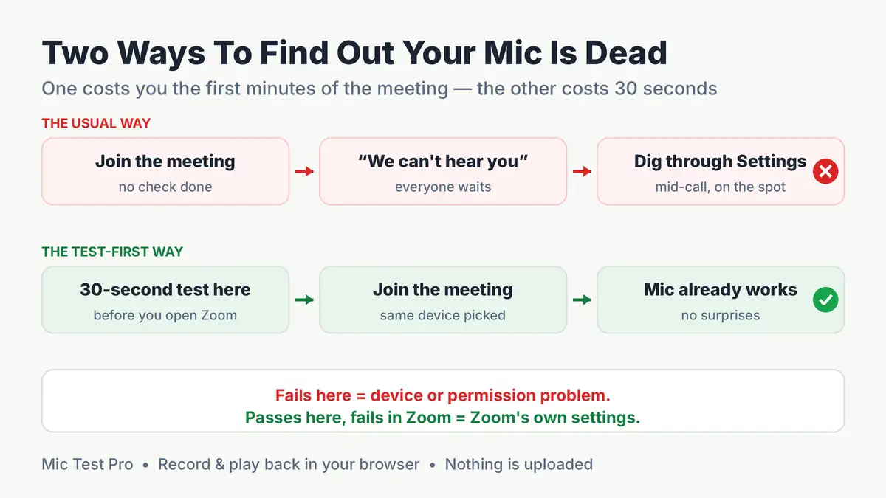
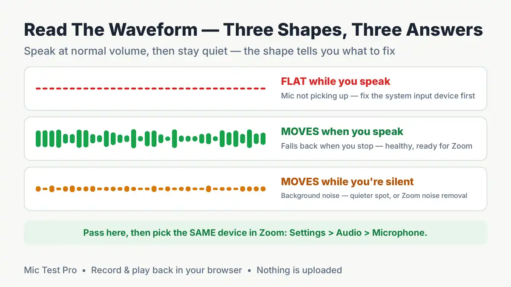
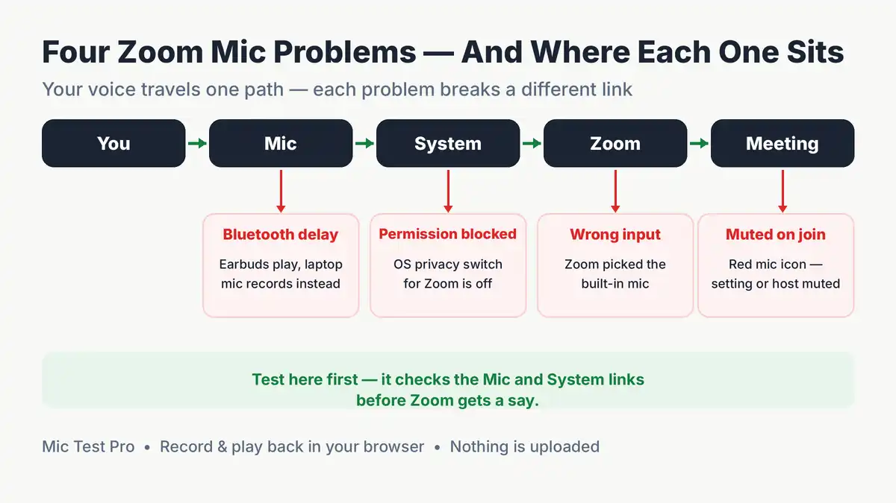
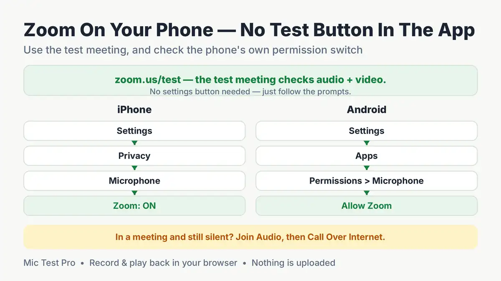

Why Test Your Mic Before A Zoom Call?
Short answer: because Zoom's own mic test is buried in settings, and most people only open it after a meeting has already started and someone has said "we can't hear you".

Zoom does have a proper built-in test. In the desktop app you click your profile picture, then Settings, then the Audio tab, and in the Microphone section there is a Test microphone button that records your voice and plays it back. It is a good test — it is just in a place nobody visits before a call.
This page gives you the faster first check. Open it in a browser tab, click Start Mic Test, allow microphone access, and speak. You see the waveform and input level react in real time, and you get a noise level reading at the same time. No Zoom account, no download, and nothing is uploaded — the audio never leaves your browser.
The two tests answer different questions, and using both in the right order saves time:
This test fails → your mic, cable, Bluetooth connection, browser permission or system input setting is the problem. Zoom cannot fix that, and changing Zoom settings will not help until this test passes.
This test passes, Zoom still fails → your hardware is fine. Zoom is almost certainly using the wrong input device, or a Zoom setting (muted on join, automatic volume, noise suppression) is getting in the way. Work through the table below.
This matters most when you switch devices often — laptop mic at your desk, USB headset for calls, earbuds from your phone. Each switch is a chance for Zoom to quietly default back to the wrong microphone.
How To Check Your Mic Before Joining Zoom
Click "Start Mic Test" above and allow microphone access in your browser. If you blocked access earlier by mistake, click the lock or site-settings icon in the address bar and set Microphone to Allow, then reload the page.
Speak at the volume you would use in a real meeting — not louder. Watch the waveform and the input level. A healthy result moves clearly when you speak and falls back when you stop.
Stay quiet for a few seconds and look at the Noise Level reading. Then make your normal background sounds — fan, keyboard, traffic from an open window. If the reading jumps while you are silent, Zoom's background noise suppression or a quieter spot will matter for your call.
If the level stays flat, do not open Zoom yet. Change your system's default input device (on Windows: Settings > System > Sound > Input; on a Mac: System Settings > Sound > Input), check the mic is not muted on the device itself, and test again.
Once this test passes, open Zoom and pick the same input device there: profile picture > Settings > Audio, and choose it in the Microphone section. If you have time, click Test microphone in that same panel — Zoom records a short sample and plays it back, so you hear exactly what other people will hear.
The latency reading is shown in milliseconds (ms): the delay between speaking and your browser receiving the sound. Lower is better — a high reading, often from a Bluetooth headset, means your voice will lag behind in the meeting too.

Record Your Voice Without Opening Zoom
Zoom's own Test microphone records your voice and plays it back, but it lives inside the app's settings. This page does the same job in the browser, with no Zoom account: press Record Voice, speak at your normal meeting volume, then stop and listen to the playback. If you sound quiet, distant or muffled here, fix the mic or its position before you join — Zoom will only pass the same sound along. Recordings run up to 60 seconds, you can download the clip as a WAV file, and the audio never leaves your browser.
Two more checks live on the same panel. Test Speakers plays a short test sound through your chosen output, so you can confirm you will hear the meeting before you open Zoom. Hear Yourself plays your own voice back live while you speak — use headphones, or your mic will pick up your speakers and the meeting will hear an echo.
Common Zoom Microphone Problems
Wrong Input Selected
Zoom may default to your laptop's built-in mic instead of a connected headset, especially after you plug a headset in while Zoom is already open. You sound distant because, to the laptop, you are. Pick the device by name in Settings > Audio > Microphone — and if the headset is not listed at all, restart Zoom after plugging it in.
Muted On Join
Zoom can join meetings with your mic muted. On desktop this is the "Keep my microphone muted" option in Settings, under Meetings & webinars > Join experience. Hosts can also mute you, and some meetings are set to mute everyone on entry. A muted mic in Zoom is not a broken mic — test here first, and if this page hears you, look for the red mic icon in the meeting toolbar instead of changing hardware.
OS-Level Permission Blocked
Windows and macOS can block microphone access at the system level, separately from both your browser and Zoom. On Windows: Settings > Privacy & Security > Microphone — turn on Microphone access and "Let apps access your microphone". On a Mac: System Settings > Privacy & Security > Microphone — turn on your browser or Zoom. If the app is switched off there, no setting inside Zoom will bring the mic back.
Bluetooth Headset Delay
A Bluetooth headset can be connected and still be the wrong choice for a call. The mic and the speakers are selected separately on most systems, so you can hear through the earbuds while the laptop mic does the recording. Bluetooth also adds delay, and when the mic activates, many headsets drop to a lower-quality call profile, which is why your voice can sound muffled even at a good volume. If your call matters, test the Bluetooth mic here, then test a wired or built-in mic, and compare the noise and latency readings before you decide.

Zoom Mic Problems: Problem, Cause, Fix
| Problem | Most likely cause | Fix | Check on this page |
|---|---|---|---|
| People in the meeting cannot hear you at all | Wrong input device selected in Zoom, or you are muted | Settings > Audio > Microphone: pick the device that passed this test. Then check the mic icon in the meeting toolbar is not red. | Input Level stays flat when you speak |
| This test hears you, Zoom does not | Browser or system permission is fine, but Zoom's permission is blocked, or Zoom is set to a different device | Check the system privacy setting for Zoom (Windows: Privacy & Security > Microphone; Mac: Privacy & Security > Microphone). Then match the device in Settings > Audio. | This page hears you — the fault is in Zoom |
| Your voice fades in and out | "Automatically adjust microphone volume" keeps changing your level (Zoom itself suggests turning it off when audio fades in and out) | Settings > Audio > Microphone: turn off Automatically adjust microphone volume, then set the Input volume slider by hand and re-test. | Input Level rises and falls on its own |
| You sound too quiet | Input volume too low, mic too far away, or the wrong (built-in) mic is active | Move the mic closer first. Then raise Input volume in Settings > Audio. Confirm the device named there is the one you are speaking into. | Input Level barely moves at normal distance |
| People hear an echo of themselves | Your speakers are feeding your mic, or two audio devices are live in the same room | Use headphones. If two people or two devices are in one room, one of them must leave computer audio or disconnect it — muting alone does not stop the speaker half of the echo. | Noise Level jumps when your speakers play |
| Background noise is louder than you | Wrong microphone mode for your room, or a mic placed next to the noise source | Settings > Audio > Microphone modes: Noise removal (the default), Personalized audio isolation, or Original sound for musicians (noise suppression off). Pick the mode for your room, then re-test. | Noise Level stays high while you are silent |
| Mic worked yesterday, dead today | An update, a new default device (webcam mics are common culprits), or a Bluetooth device that reconnected as speakers only | Test here. If this page is also flat, fix the system input device first. If this page works, reselect the device inside Zoom. | Input Level flat — re-check the Device name |
| Camera works, mic does not, in the browser version of Zoom | The browser was never given microphone permission for the Zoom web app | Click Allow on the microphone prompt when joining, or allow the microphone in the browser's site settings for Zoom, then rejoin. | Device name shows the wrong mic, or nothing |
| Audio not working on Zoom — you hear nothing and nobody hears you | Wrong speaker and microphone selected, or computer audio never joined | Settings > Audio: pick the right speaker and mic, click Test speaker and Test microphone; on mobile, Join Audio > Call Over Internet. | Zoom no audio: Test speaker tone plays and Input Level moves |
How To Test Your Mic And Speakers Together
Short answer: test the mic here first, then run Zoom's own speaker test and mic test together in one panel.
In Zoom's desktop app, open Settings > Audio. In the Speaker section, click Test speaker — you should hear a test tone; if you hear nothing, pick a different speaker from the drop-down or raise the Volume. In the Microphone section below it, click Test microphone — Zoom records your voice, the Input volume bar moves while it records, then plays the audio back.
There is a second chance to test when you join a meeting. If "Automatically connect to computer audio" is off, Zoom offers "Test speaker and microphone" before you enter. It plays a ringtone and asks if you heard it, then records your voice and plays it back. It takes about twenty seconds and it is the same check the host wishes everyone would run.
You can also use Zoom's test meeting — search "zoom.test" or open zoom.us/test directly. Click Join, launch Zoom (or choose "Join from your browser" if you cannot install the app), and follow the prompts to test your video, audio and microphone. You end up in a practice meeting where nobody can hear your mistakes — a sensible five minutes before an interview or a client call.
Testing Your Mic On The Zoom Mobile App
Short answer: the mobile app has no Test microphone button in its settings that Zoom documents — use the test meeting instead.

Zoom's official audio-settings and troubleshooting pages list the Test microphone button for the desktop app only. On a phone, visit zoom.us/test in the Zoom app or browser and follow the test-meeting prompts to check your audio and video.
If people cannot hear you in a mobile meeting, Zoom's own troubleshooting list is short and practical: make sure you are not muted (the host can mute you); if you see a Join Audio icon, tap it and choose Call Over Internet; if the app asks for microphone access, allow it. Still nothing? Check the permission at system level — on iPhone: Settings > Privacy > Microphone, turn on Zoom; on Android: Settings > Apps & notifications > App permissions (or Permission Manager) > Microphone, and allow Zoom — then close other apps that might be holding the mic, and restart the phone if it still fails. One mobile setting worth knowing: in the app's Settings, under Meetings, "Mute my microphone" keeps you muted every time you join, and "Auto connect audio" joins the call audio automatically.
More Mic Tests
Zoom Mic Test FAQs
Why can't Zoom find my microphone?
This usually happens when Zoom is set to the wrong input device, or the browser/OS is blocking microphone access. Test here first to rule out a hardware issue.
Participants in a Zoom meeting cannot hear me — what do I check first?
Check two things, in this order: the mic icon in the meeting toolbar (red means muted, and the host may have muted you), then Settings > Audio > Microphone, where Zoom shows the device it is actually using. If the device named there is not the one in front of you, that is the whole problem. If both look right, run this test — if this page cannot hear you either, the fault is your device or system settings, not the meeting.
Do I need a Zoom account to use this mic test?
No. This tool runs independently in your browser and does not need Zoom, a login, or any installation.
How do I fix a muted microphone icon in Zoom?
Click the microphone icon in the Zoom toolbar to unmute, then confirm the correct input device is selected in Zoom's audio settings.
Why do I hear an echo or audio feedback on Zoom?
Echo means someone's speakers are being picked up by a microphone and sent back. Zoom lists three main causes: a participant has computer audio and telephone audio active at the same time; participants' speakers are sitting too close to each other; or several computers with live audio are in the same room. Loud external speakers and a mic that picks them up make it worse. Headphones fix most cases. If it is you causing it, mute is not enough when another device in the room is still playing the meeting — that device should leave or disconnect its computer audio.
Why is my mic too quiet on Zoom?
Usually one of three things: the input volume is low, you are too far from the mic, or Zoom is using a different mic than you think. Fix the distance first — it changes your level more than any slider. Then, in Settings > Audio, check the device and the Input volume. If your level keeps drifting up and down, turn off Automatically adjust microphone volume in the same panel and set the slider yourself; Zoom recommends exactly that when audio fades in and out.
How do I test audio on Zoom before a meeting?
Open this page and click "Start Mic Test" to check your microphone, then separately confirm your speakers by playing any audio. Zoom also has its own audio test inside Settings, but checking here first is faster since it needs no login.
Why can't I hear anything on Zoom?
If you cannot hear anything on Zoom, the problem is usually the speaker side, not the mic. In the desktop app, open Settings > Audio > Speaker, pick the right speaker and click Test speaker — you should hear a test tone. Also check that you joined the computer audio: on mobile, tap Join Audio and choose Call Over Internet. If the test tone plays but meeting audio does not, reselect the speaker; if nothing plays anywhere, check your system volume and output device first.
How can I test my camera and microphone together before Zoom?
This tool checks your microphone input specifically. For your camera, open Zoom's own Settings > Video panel, which shows a live camera preview. Testing both separately before joining helps you catch problems with either device early. Or use Zoom's test meeting at zoom.us/test, which runs through video, audio and microphone in one session.
How do I test my mic for background noise before a call?
Click "Start Mic Test" and watch the "Noise Level" reading while staying quiet, then again while your usual background sounds (fan, keyboard, traffic) are present. A noticeable jump means Zoom's background noise suppression or a quieter room will help.
How do I test my Zoom microphone on my phone?
Use Zoom's test meeting: open zoom.us/test and follow the prompts to test your audio and video — the mobile app does not document a separate mic-test button in its settings. If the test meeting cannot hear you, allow microphone access for Zoom in your phone's privacy settings, and inside a meeting tap Join Audio > Call Over Internet if that icon appears.
How do I test my microphone and speakers in Zoom at the same time?
In the desktop app: Settings > Audio. Click Test speaker in the Speaker section to hear a tone, then Test microphone in the Microphone section to record your voice and hear it played back. When joining a meeting without automatic computer audio, you can also choose "Test speaker and microphone" on the join screen, which runs both checks one after the other.
Can I test my speakers with this tool too?
Yes. Press Test Speakers and the tool plays a short test sound through your chosen output. If you hear it clearly, the listening side works before you open Zoom; if you hear nothing, check the output device and volume in your system sound settings first. Zoom's own Test speaker does the same check inside the app — this one catches the problem a step earlier.